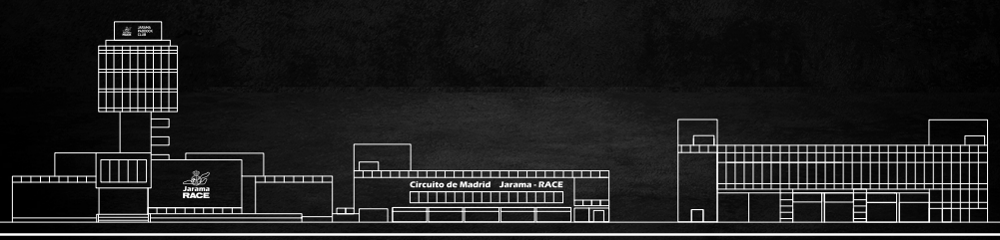
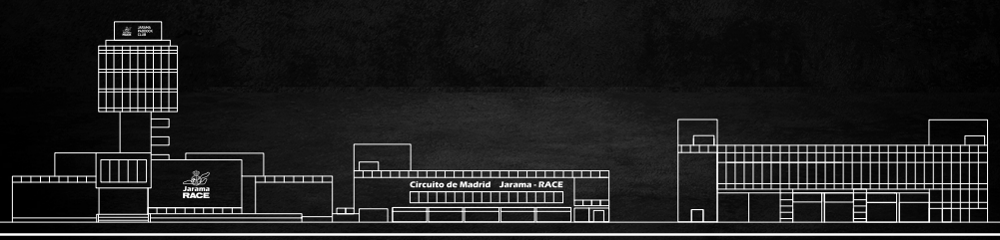
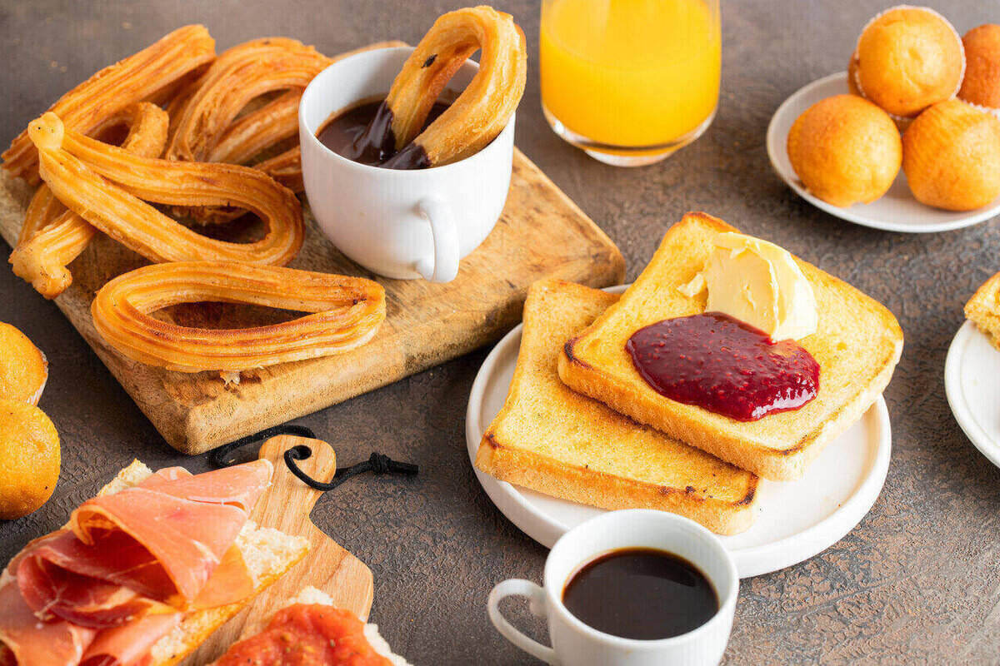
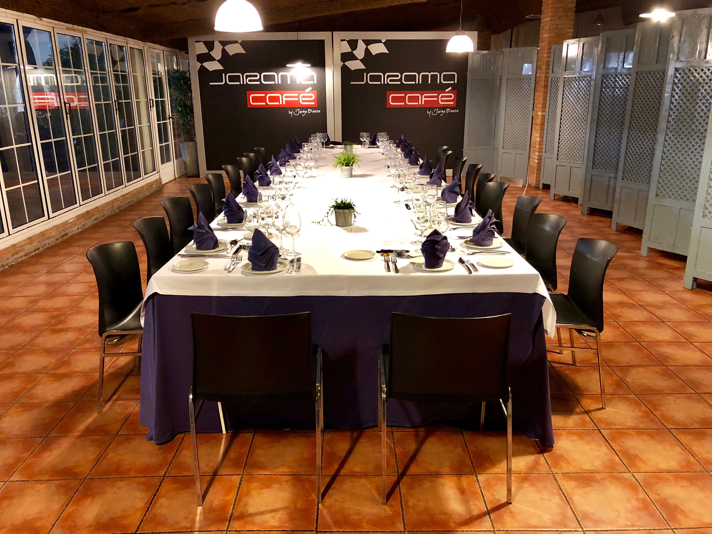

DOSSIER COMERCIAL 2024
coffee
1---------------------10.50/pax
- mini croissant
- mini magdalena variada
- mini napolitana de chocolate
- zumo de naranja natural
- cafe,leche,infusiones,colacao,agua mineral

2------------------------14.40/pax
- mini croisant de curvo
- mini napolitana de chocolate
- mini magdalena variada
- zumo de naranja natural
- mini sandwich de jamon y queso crema de hojas verde
- cafe,leche,infusiones,colacao,agua mineral
3------------------------19.50/pax
- seleccion de mini croissant relleno
- mini duo grosella albaricoque
- mini napolitana variada
- tosta multicerales con gucamole y tomate
- bowl de fruta al tiempo
- mini sandwich de jamon y queso crema de hojas verde
- zumo de naranja natural
- zumo de apio con manzana
- cafe,leche,infusiones,colacao,agua mineral

4-----------------------25.50/pax
- seleccion de mini croissant relleno
- mini montadito de cerales con jamon y tumaca
- pan de foccacia relleno de salmon ahumado y mayonesa de manzana
- yogur griego con miel y avena
- quinoa al vapour con confitura de frutos rojos
- bocado de tortilla española con cebolla caramelizada
- zumo de naranja natural
- zumo de zanohoria con jengibre
- cafe,leche,infusiones,colacao y agua mineral
1-------------------------------15,00/pax
- seleccion de mini tortilla con mayonesa de chipotle
- mil hojas de salmon con mouse de queso,paso de corinto y eneldo sobre mini blini
- pan multicerales relleno de jamon iberico y tomate
2-------------------------------22,00/pax
- mini ensalada caprese con toque de modena y pesto genoves
- seleccion de mini tortilla con mayonesa de chipotle
- wrap de pollo con verdura asada,agucate y queso
- laminas de pulpo sobre patata revolcana y aceite de perejil
- bocado de huevo roto con chistorra a nuestra estilo
3-------------------------------15,00/pax
- seleccion de mini tortilla con mayonesa de chipotle
- ensaladilla rusa classica con ventresca y pimientos confitados
- mini arepa de rabo de torrocon sujugo concentrado
- patata brava con nuestra salsa casera
- albondigas de ternera con guiso de chipirones
- brocheta pollo satay con caremelo de sesamo